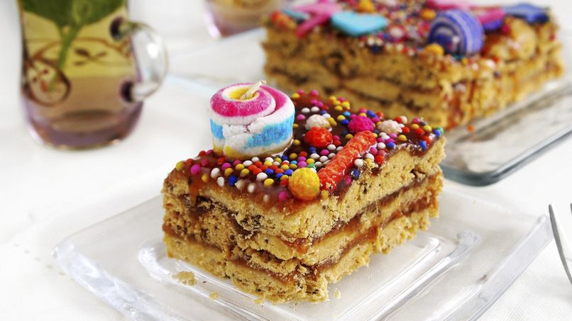

Turrón de Doña Pepa

Description
Turron de Doña Pepa is a Peruvian dessert made during October
to celebrate Señor de Milagros, the Lord of Miracles, and the "purple month".
It is said that a disabled woman who could not move her arms, Doña Pepa,
was able to move them again and during the night dreamed of this recipe.
This dish enriches people's lives with celebration, culture, and joy.
It represents cultural stories passed down thorugh generations through food and represents miracles.
Ingredients
Cookie
- 1 lb. - cake flour
- 1/2 tsp. - salt
- 5 - egg yolks
- 1 cup - vegatable shortening
- 2 tbsp. sesame seeds
- 1 cup - boiling water
- 1 tbsp. anise seeds
- 2 oz. - anise liquor
- n/a - sprinkles
Syrup
- 2 - molasses
- 2 - quinces
- 1 - orange peel
- 6 - cloves
- 2 cups - water
Steps
- Boil the anise seeds and mix with the cookie ingredients (except the sprinkles)
- Roll the dough into strips
- Bake until golden brown
- Boil the syrup ingredients untill it's thick
- Stack strips of cookies, pouring syrup on each row
- Cover with candy sprinkles